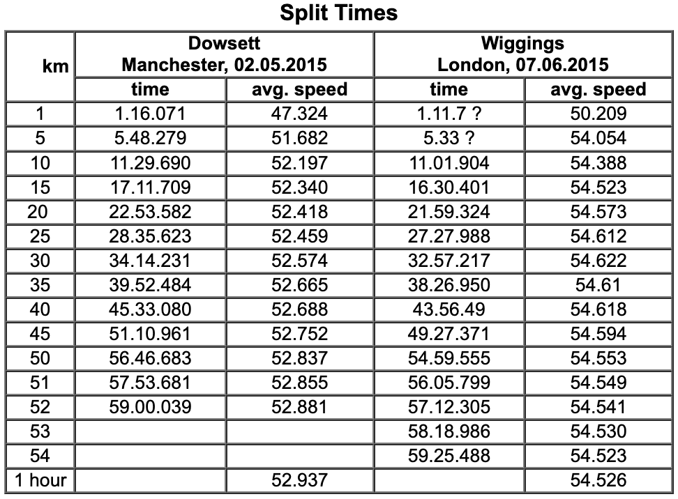
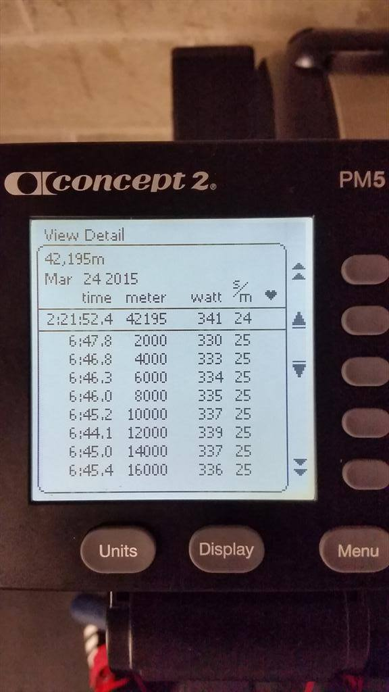

Staying consistent in efforts and in life.
Eliud Kipchoge's 1:59 hr marathon's splits were steady by design:
| Distance (km) | Split | Time |
| 5 | 14:10 | 0:14:10 |
| 10 | 14:10 | 0:28:20 |
| 15 | 14:14 | 0:42:34 |
| 20 | 14:13 | 0:56:47 |
| 25 | 14:12 | 1:10:59 |
| 30 | 14:12 | 1:25:11 |
| 35 | 14:12 | 1:39:23 |
| 40 | 14:13 | 1:53:36 |
| 42.195 | 6:04 | 1:59:40 |
As was his 2022 Berlin Marathon world record:
| Distance (km) | Split | Time |
| 5 | 14:24 | 14:24 |
| 10 | 14:37 | 29:01 |
| 15 | 14:36 | 43:37 |
| 20 | 14:19 | 57:56 |
| 25 | 14:28 | 1:12:24 |
| 30 | 14:21 | 1:26:45 |
| 35 | 14:16 | 1:41:01 |
| 40 | 14:31 | 1:55:32 |
| 42.195 | 6:07 | 2:01:39 |
Bradley Wiggins' one-hour record splits were steady:
Ben de Wit's marathon row record splits were steady:
The point is clear: long, record-breaking efforts necessitate steady pacing for both physiological and psychological reasons.
Steady pacing (SP) is a relief on the mind compared to its counterparts, positive splitting (PS, becoming slower over the course of the effort) and negative splitting (NS, becoming faster over the course of the effort).
PS expends valuable mental energy early on that is required for later on when the physical stores of energy have been depleted. Watching averages and splits get worse only serves to kill any motivation that one may have had. Time until completion is calculated and the pace of slowing extrapolated, resulting in a significantly longer—and thus more painful—effort for both the mind and body.
NS places a certain dread within the mind. The player knows that once milestone X is reached, they will have to expend not just more effort, but more-more effort (e.g., riding at 300 W for 10 minutes at the beginning of a ride requires significantly less effort than 10 minutes at the end of a ride, and negative splitting requires >300 W output at the end). The dread occupies the mind and becomes more pronounced with the pain, a constant reminder that even more optional pain is coming. Even if energy was built up in the bank for the first X of the effort, it may have been less than expected due to unforeseen conditions, making the next X even scarier.
SP, while requiring a constant increase in effort to maintain the same pace over a long effort, allows for the player to keep a goal in mind, enabling them to only focus on the single repetition at hand and not what's to come. (The same idea can be argued for NS, but the "more-more effort" part is difficult to keep out of one's mind—that much pain looming in the near future is just too much sometimes.) Racking up reps with the same result (time, weight, power, etc) is also motivating.
Going through life at the same speed helps to build comfort at said speed. One becomes used to traveling at that pace and anything slower or faster just feels off. There's always the opportunity to slow down or speed up, but the cadence and velocity have been there for some time, whether minutes or weeks or decades, and are just a part of one's life, their identity, their modus operandi. It's easier to not have to think about changing speed and maintain it than to consciously adjust.
SP also builds momentum. Enough time has been accumulated at that pace to coast for a bit with minimal energy lost when restarting, whereas accelerating (in order to maintain cumulative speed) expends energy at a much higher rate and decelerating requires acceleration later on to compensate.
SP isn't always the best strategy, especially in times of hardship—sometimes rapid changes of pace are required to stay afloat: project that's due soon may have had some unexpected roadblocks or the peloton may have broken away and not chasing will result in major headwinds. SP is, however, often the best strategy when in a vacuum with oneself.
SP can be shunned in favor of high variability for hedonic reasons: abstaining from an activity (SP) while engaging in it every so often (acceleration) can increase the satisfaction immensely.
SP can also be disregarded in favor of the moment's circumstances: feeling good enough to push hard for the rest of the effort? Go get 'em.
SP is often the best way to conserve physical and mental energy, especially in a vacuum.
Experiment with SP. Try varying effort levels throughout the bout and compare the results to steady state.
Don't blindly enforce SP. Learn when and where it's good and where it isn't. Adapt with the circumstances at hand or, if possible, force them to accommodate SP.